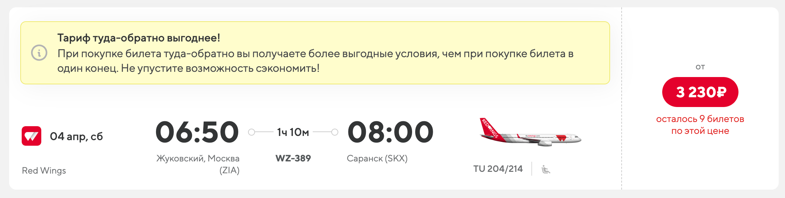

📖 出发前必读：《俄罗斯境内旅行与飞行指南 ver.2026》
图波列夫 Ту-204/214（Tu-204/214）
- 图-204/214是苏联时代末期由图波列夫设计局研发的双发窄体干线客机，旨在替代老旧的图-154三发客机，其定位和外形均与波音757非常相似。
- 客舱布局和乘坐体验已经非常接近现代西方主流窄体客机（如A320和737系列），噪音控制和客舱增压都有显著提升，不再是”硬核”的复古风，反而带着几分现代干线客机的从容。
- 图-214主要是图-204的衍生升级型号（主要由喀山飞机制造厂生产，起飞重量更大，至于为什么叫一个新的型号，这是因为喀山厂具备一定的自主设计的能力，214相比204有较大修改）。在如今的大环境和制裁背景下，俄罗斯重新启动了该机型的复飞与生产计划。
红翼航空（Red Wings Airlines / WZ）
购票平台：国际OTA、俄罗斯本地OTA、航司官网
红翼航空曾经是Tu-204系列在全球最大的运营商之一，后来引进更为经济的机型后一度将其封存。如今，红翼航空又把它们从机库里拖出来擦新复飞（甚至是OAK原厂涂装）。作为一家颇具规模的正规航司，他们的购票流程极其丝滑，航班服务也相对规范且现代化。如果想体验俄罗斯较新一代的大型干线国产客机，红翼的Tu-204/214绝对是最佳选择。
| 乘坐体验 | 排班密度 | 性价比 | 稳定程度 |
|---|---|---|---|
| 🌟🌟🌟🌟 | 🌟🌟🌟🌟 | 🌟🌟🌟🌟 | 🌟🌟🌟 |
Tu-204/214活跃的地区：
- 莫斯科（茹科夫斯基 ZIA、多莫杰多沃 DME 等）出发前往特拉维夫、巴统等地的国际航班（Tu-204常被用来飞这些稍微有距离的国际线）。
- 莫斯科辐射至索契、叶卡捷琳堡等国内主干线。
（由于主干线航班运力调配较频繁，建议购票前在红翼官网或OTA上留意具体航班的机型标识是否为 Tu-204 或 Tu-214）
举例来说：
- 莫斯科ZIA-萨兰斯克

- 莫斯科DME-巴统